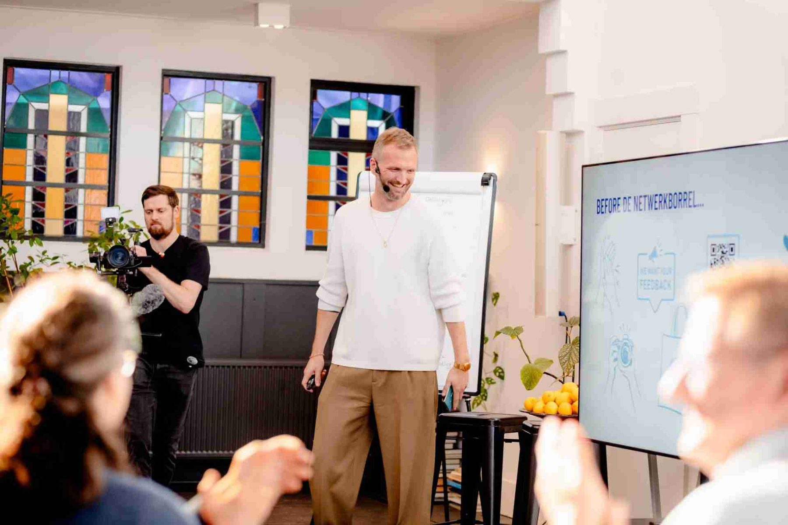
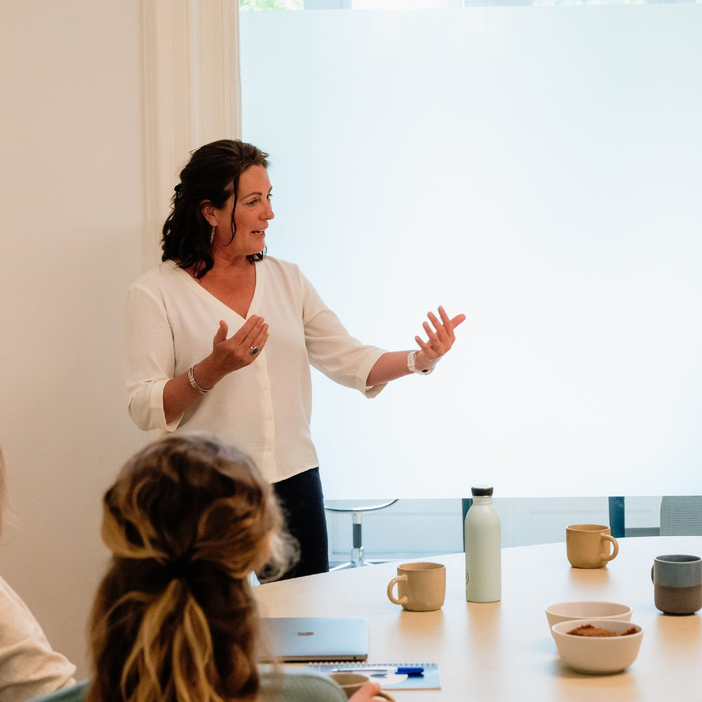

Aandacht die niet van toeval afhangt.
Eén programma voor je hele organisatie: begeleiding voor medewerkers, houvast voor leidinggevenden, overzicht voor HR. Georganiseerd door jou, zodat niemand het alleen hoeft uit te zoeken.

Van brandjes blussen naar beleid
Zo gaat het vaak
- Hulp start pas bij een ziekmelding.
- Elke leidinggevende doet het anders.
- HR zoekt per geval opnieuw uit wat kan.
- Alleen rouw telt, de rest blijft onzichtbaar.
Wat je krijgt
Alles in één programma. Wat je inzet, hangt af van wat er speelt.
Geen therapeut. Wel een plan.
De eerste reactie van een leidinggevende bepaalt vaak of iemand aan het werk blijft of uitvalt. Daarom bouwen we die laag mee.
- Een link om iemand aan te melden, geen extra systeem
- Advies van een begeleider voor het eerste gesprek, en het gesprek daarna
- Een training die je echt gebruikt, en een handboek dat je terugleest
HR ziet trends. Nooit namen.
Wat HR ziet
- Hoeveel aanvragen er zijn
- Welke thema's spelen
- Gebruik per onderdeel van het programma
Niets doen is ook een keuze. Een dure.

Wat je wilt weten voor je begint
Hoe snel kan een medewerker starten?
Binnen enkele dagen is er een kennismaking van twintig minuten met een begeleider in de buurt. Bij een crisis zijn we er binnen 48 uur.
Gaat het alleen over rouw?
Nee. Overlijden, ziekte, een ongeval, een reorganisatie, scheiding, mantelzorg, baanverlies en andere gebeurtenissen met impact.
Moeten leidinggevenden een nieuw systeem leren?
Nee. Ze melden iemand aan met een link. HR beheert alles in het portaal.
Hoe zit het met privacy?
Terugkoppeling naar HR is altijd geaggregeerd en nooit herleidbaar tot een persoon. Wat een medewerker deelt, wordt alleen met toestemming gedeeld.
Wat kost het?
Dat hangt af van je organisatie en wat je nodig hebt. In een kennismaking laten we zien wat past en wat het kost.
Samen verkennen wat jullie nodig hebben
Een kennismaking is vrijblijvend. Je vertelt hoe het nu gaat, wij laten zien wat past.